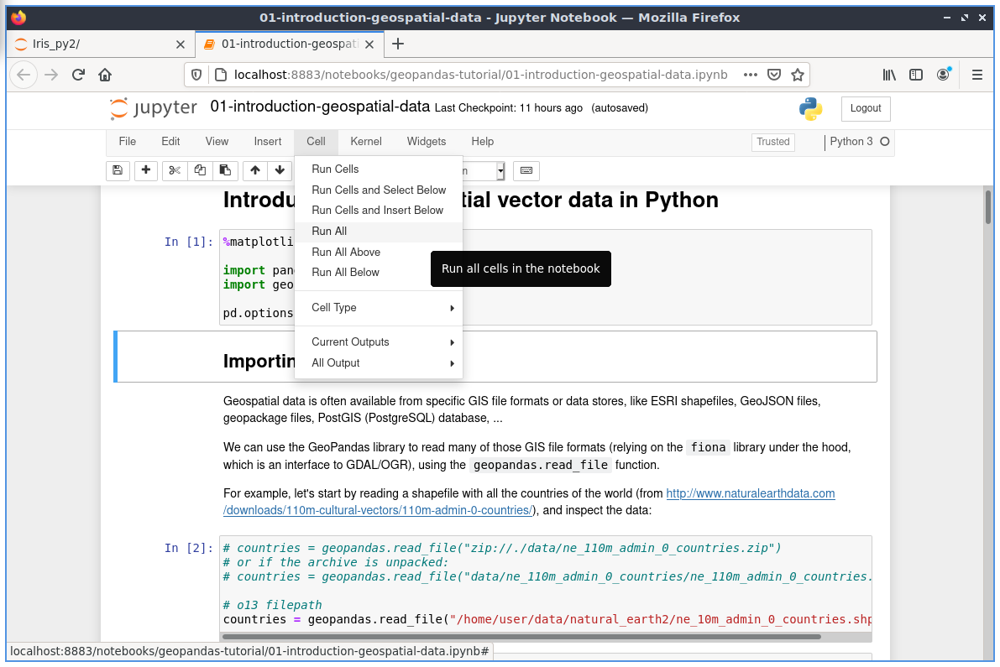

Snabbstart för Jupyter Notebook¶
Jupyter Notebook är en webbapplikation som gör att du kan skapa och dela dokument som innehåller livekod, ekvationer, visualiseringar och förklarande text. Användningsområden inkluderar: datarengöring och transformation, numerisk simulering, statistisk modellering, maskininlärning och mycket mer.
Denna snabbstart beskriver hur du gör:
Starta en Jupyter Notebook-server
Ladda en jupyter-anteckningsbok
Interagera med pythonkod
Innehåll
Starta Jupyter-servern¶
Från programmets startmeny i det nedre vänstra hörnet.
Välj Geospatial -> Spatial Tools -> Jupyter Notebook
Ett terminalfönster öppnas och en startlogg börjar rulla. Därefter startas en webbläsare som visar instrumentpanelen för Jupyter Notebook. Från Jupyter Notebook-instrumentpanelen kan du navigera i katalogträdet, starta nya anteckningsböcker, skapa filer och kataloger samt byta namn på, ta bort och ladda upp filer.

Öppna och kör en befintlig anteckningsbok¶
Låt oss öppna en befintlig anteckningsbok. Från huvudsidan klickar du på katalogen geopandas-tutorial och väljer anteckningsboken Introduction (01-introduction-geospatial-data.ipynb). Detta är en introduktion med många exempel på hur man använder geospatiala vektordata i Python med geopandas med hjälp av Natural Earth2-data.
{kind=link}
Handledningen är uppbyggd med förklarande text och celler. Cellerna innehåller i det här fallet pythonkod som kan köras.
I verktygsfältet ovanför anteckningsboken kan du välja olika alternativ:
Cell-> Run Cells: kör koden i cellen med fokus och flyttar till nästa cell.
Cell-> Run All: kommer att köra alla celler och visa resultaten Om allt fungerade som planerat bör du kunna se resultaten längst ner på sidan.
Titta på resultaten efter att ha kört alla celler.

Du kommer att se ytterligare Out[]-avsnitt med olika utdata, t.ex. tabeller, kartor eller beräkningar.
I Out[3] kan du se landinformationen i tabellform.
I Out[4] genererades ett diagram från alla länder.

Ändra kod¶
Låt oss nu ändra lite i koden.
I [10] definierades ett filter för länderna. Endast kontinenten Afrika är vald från länderna:
In [10]: africa = countries[countries['continent'] == 'Africa']
Därför finns det i handlingen bara kontinenten ”Afrika”.

Ändra valet till Asien och runda de två cellerna igen.
In [10]: africa = countries[countries['continent'] == 'Asia']
Som resultat kommer du att se att istället för Afrika kommer det att finnas Asien i diagrammet.

What next?¶
Upptäck de andra bärbara datorerna som tillhandahålls med OSGeoLive och ta reda på hur du arbetar med Shapely, Rasterio, R, Iris och annan programvara.
Mer information om jupyter notebook finns i den officiella dokumentationen för jupyter notebooks <https://docs.jupyter.org>`__.
Fler exempel på notebooks finns i rotkatalogen för notebooks.
Snabb introduktion till hur man använder gränssnittet för Jupyter Notebooks: ”Kom igång med Jupyter Notebook <https://docs.jupyter.org/en/latest/content-quickstart.html>`__.